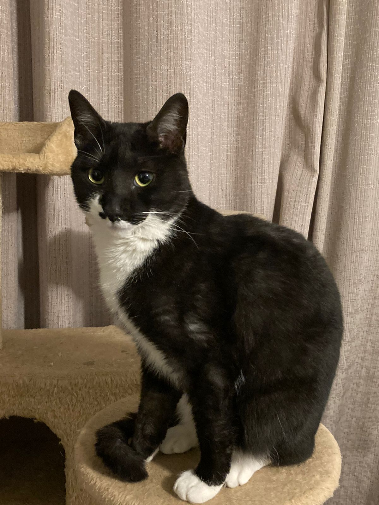
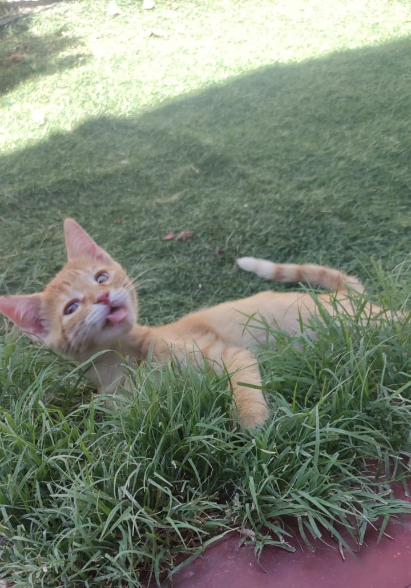

Bella
¡Hola! Esta gatita en adopción es una hermosa felina de aproximadamente 6 meses de edad. Es de raza mixta, con un pelaje suave y sedoso. Tiene ojos grandes y brillantes, que le dan una apariencia muy dulce y adorable.

Teo
¡Hola! Este gatito en adopción es una hermosa criatura de aproximadamente 4 meses de edad, con un pelaje suave y sedoso de color blanco y marrón. Tiene ojos grandes y brillantes de color verde intenso, que resaltan su belleza y lo hacen lucir muy tierno.

Chispita
¡Hola! Este gato naranja en adopción es un felino muy tierno y dulce, con un pelaje suave y sedoso de color naranja brillante. Tiene ojos grandes y expresivos de color verde intenso que lo hacen lucir muy adorable.